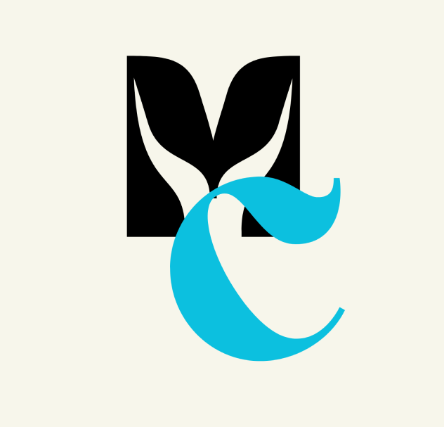

Somos Tamires e Lucas, estudantes de Análise e Desenvolvimento de Sistemas (ADS), nascidos em 2008 e 2009. Compartilhamos o interesse pela tecnologia e estamos sempre buscando novos conhecimentos, explorando ideias e desenvolvendo projetos criativos. Acreditamos que a tecnologia vai além da programação: ela é uma ferramenta para inovação, aprendizado e criação. Por isso, buscamos evoluir constantemente e transformar curiosidade em experiência e desenvolvimento.